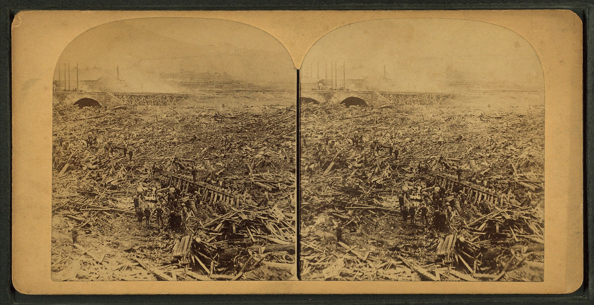

Chapter 10
The Stone Bridge and the Fire
A section of wooden boathouse struck the upstream face of the stone bridge at approximately 4: 07 p. m. on May 31, 1889. The timbers hit the masonry and held. The current forced more wreckage against it. The pile grew. The seven arches of the Pennsylvania Railroad’s viaduct began to close.
The flood’s single deadliest scene was not the dam but the stone bridge at Johnstown. The Pennsylvania Railroad had built the masonry span to carry a rail line across the Conemaugh. The structure was substantial and permanent. Its designers had accounted for freight tonnage and flood scour. They had not accounted for a reservoir emptied at once.

The wave arrived carrying the shredded contents of every town along the Little Conemaugh. South Fork. Mineral Point. East Conemaugh. Woodvale. Each settlement contributed its wreckage to the current. Houses, boxcars, factory machinery, bridges, railroad track, trees, fencing, and hundreds of human beings. The mass met the bridge. The arches plugged. The flood reached Johnstown traveling at speeds of 40 miles per hour and reaching a height of 60 feet in places, catching most people in their homes and workplaces.
The debris jam formed with speed that defied response. Wreckage packed the seven openings. The current could not pass. Water rose behind the obstruction and spread through the city. The pile accumulated. It compressed. It grew upward and outward. Within an hour it covered roughly thirty acres. It reached heights of up to seventy feet.
The jam was no loose flotsam. It was a compressed amalgam of Johnstown’s industrial and domestic life. Structures from upstream towns rode the current into the mass. Barbed wire from the Gautier Wire Works tangled through the pile. Steel rails bent around wooden beams. The South Fork Fishing and Hunting Club’s own boathouses and cottages, swept from the lake’s edge fourteen miles upstream, joined the accumulation. The private pleasure grounds returned to the city as wreckage.
The absentee ledger recorded profits and pleasures at one end and produced destruction at the other. The club’s members had treated the dam and the lake as scenery. The scenery now lay in the debris at the bridge. The ledger’s balance depended on distance. The owners were in Pittsburgh. The wreckage was in Johnstown. The distance collapsed in the pile.
The bridge functioned as a second dam inside the city. The first dam released the reservoir. The second dam caught the release. The structure was not overtopped. It was plugged. The obstruction forced the primary flood surge to roll upstream along the channel of the Stoney Creek River. Gravity then caused the diverted surge to return. The second wave struck the city from a different direction.
The water recirculated. It churned. It carried people who had survived the first wave back toward the bridge. Survivors who had reached attics or clung to floating wreckage were funneled by the currents into the growing barrier. The pile at the bridge became a strainer. It caught bodies and structures alike.
The living were caught with the dead. Survivor testimony described people swept into the jam. Some were crushed by shifting debris. Others were trapped alive within pockets of wreckage as the water swirled around them. The temporary damming action created a violent pool at the bridge. The churning water prevented escape.
The bridge had been built for permanence. Its masonry was heavy. Its arches were wide enough for normal river flow. The design was competent for its purpose. Its purpose did not include stopping a debris-laden flood wave from a failed reservoir. The structure’s strength became its danger. A lighter bridge would have failed. The wreckage would have passed through. The stone bridge held. The wreckage piled. The water backed up. The city filled.
The pile grew in layers. The first layer was heavy material — stone, steel, machinery. It anchored against the bridge piers. The second layer was lighter — wood, furniture, household goods. It rode up over the first. The third layer was people. The living and the dead mixed with the wreckage. The strainer sorted nothing. It caught everything.
The water behind the jam rose. The backed-up flood covered blocks of the city that the initial wave had missed. The bridge extended the flood’s reach. The destruction came not from one wave but from a dynamic process of impact, damming, recirculation, and accumulation. The bridge was the mechanism. The debris was the material. The water was the force. The fire would be the transformation.
The first accounts of fire appeared almost immediately. Some survivors reported seeing flames as soon as the debris jam formed. Others stated the fire broke out hours later, after nightfall on May 31. The conflicting reports likely stemmed from differing vantage points. Survivors on the surrounding hillsides saw the blaze from different angles. The ignition was piecemeal. Different materials in the vast pile caught fire at different times.
The most plausible explanation pointed to fractured gas lines from destroyed homes and businesses. Coal oil and other flammable materials saturating the wreckage provided fuel. The fire took hold. It spread through the pile. It burned through the night of May 31 into June 1. It burned for three days. The most intense and deadly phase occurred in the first hours.
The fire created an inferno for those still trapped in the debris. People who had been washed downstream and caught in the jam were burned. The heat was intense. It fused metal. It cremated remains. Later identification efforts were complicated by the fire’s destruction of bodies. Some victims were never recovered. They were buried too deep in the pile or consumed by the flames.
The fire illuminated the ruined city. Survivors on the hillsides above Johnstown watched the blaze. The light was visible for miles. The flames rose from the debris pile at the bridge. The fire marked the point where an engineering failure became a catastrophe of a different order. The dam’s collapse released the water. The bridge’s obstruction trapped the wreckage. The fire consumed what the water had caught.
The chain of causation ran from the dam to the bridge to the fire. Each link was necessary. Each link was the product of a decision or an omission. The dam had been lowered and patched. The bridge had been built without consideration of a reservoir’s release. The gas lines had been laid through a city built on coal and industry. The fire was a consequence, not an accident.
At least eighty people died at the bridge alone. The true number was obscured. Many bodies were consumed by the fire. Others were buried so deeply in the pile that they were never recovered. The count of the dead at the bridge was a minimum. The actual toll was higher.
The deferred-maintenance debt came due at the bridge. The cost of neglected repairs to the dam passed to the public. The private owners had treated the structure as scenery. The public paid with lives. The bridge made the debt visible. The fire made it irreversible.
The pile at the bridge was a record. It contained the material of Johnstown’s industrial life. It contained the material of the South Fork Club’s pleasure grounds. It contained the bodies of the dead. It was a ledger written in wreckage. The private account of profits and pleasures was balanced against the public account of destruction. The bridge was where the two accounts met.
The Pennsylvania Railroad had built the bridge for its trains. The trains carried freight and passengers. The bridge was infrastructure. It was designed to bear weight and resist force. It did both. It bore the weight of the debris. It resisted the force of the flood. The result was catastrophic. The bridge’s competence was the problem. A structure that failed would have let the wreckage pass. A structure that held created the jam. The jam created the fire. The fire created the annihilation.
The bridge’s design had been tested by normal floods. The Conemaugh rose and fell. The arches passed the water. The piers stood. The bridge was sound. It was sound for the river it crossed. It was not sound for the flood that came. The flood was not a river flood. It was a reservoir release. The difference was scale and content. The reservoir release carried a valley’s worth of wreckage. The bridge caught it.
The comparison was instructive. In later floods, the stone bridge remained unobstructed. The floodwaters passed through the arches. At Locust Street and Lee Place, the flood crest reached to within five feet of the high-water mark of the catastrophic flood of May 31, 1889. In the section known as Cambria City, the stone bridge, unlike in 1889, remained unobstructed. The water passed. The city flooded. But the debris did not pile. The fire did not start. The bridge functioned as a bridge.
The difference was the debris. The 1889 flood carried the wreckage of the South Fork Dam, the towns along the Little Conemaugh, and the industries of the valley. The debris met the bridge. The bridge held. The debris piled. The mechanism was simple. The consequence was not.
The fire at the bridge was the secondary disaster. The primary disaster was the flood. The flood was the product of the dam’s failure. The dam’s failure was the product of neglect. The fire was the product of the bridge’s obstruction and the gas lines and the flammable materials in the debris. Each link had its own cause. Each cause was traceable to a decision or an omission. The fire was an act of infrastructure, not an act of God.
The bridge transformed the disaster. Without the bridge, the flood would have passed through Johnstown. The destruction would have been severe. The death toll would have been lower. The wreckage would have dispersed downstream. The fire would not have started. The bridge made the disaster irreversible at the moment survivors might otherwise have been pulled free.
The people trapped in the debris at the bridge were the victims of two failures. The first failure was the dam. The second failure was the bridge. The dam released the water. The bridge caught the wreckage. The water rose. The fire started. The people in the debris could not escape. The water held them. The fire consumed them.
The survivors on the hillsides watched. They could not reach the pile. The water covered the approaches. The current was too strong. The fire was too hot. The people in the debris were beyond rescue. The bridge had made them so.
The fire burned through the night. The flames rose from the pile. The heat was intense. The light was bright. The city was dark except for the fire. The hillsides were crowded with survivors. They watched the fire. They heard the sounds from the pile. The sounds were human.
The fire began to burn itself out by dawn on June 1. The flames retreated. The smoke thickened. The pile smoldered. The heat persisted. The ruin was visible. The debris field covered thirty acres. The pile reached seventy feet. The wreckage was charred and twisted. The metal was fused. The wood was ash. The bodies were unrecognizable. After floodwaters receded, the pile of debris at the bridge was seen to cover 30 acres and reach 70 feet in height.
The stone bridge stood. The masonry was intact. The arches were open. The debris had burned away from the upstream face. The bridge was undamaged. It had functioned as designed. It had carried the load. It had resisted the force. It had held. The pile was gone or reduced. The bridge remained.
The bridge’s survival was the final irony. The structure that had created the jam, the fire, and the annihilation was the only thing left standing. The city was destroyed. The people were dead. The bridge was whole. The Pennsylvania Railroad’s masonry span had outlasted the catastrophe it had made possible.
The ruin at the bridge was the physical scale of the disaster made visible. Thirty acres of wreckage. Seventy feet of debris. The compressed material of a valley’s industrial and domestic life. The charred remains of the dead. The fused metal. The ash. The smoke. The smell.
The relief effort would have to confront this scale. The ruin was not abstract. It was a mountain of debris. It was a field of destruction. It was a mass of death. The relief workers would have to clear it. They would have to identify the dead. They would have to bury the unrecognizable. They would have to face what the dam and the bridge and the fire had made. Debris at the Stone Bridge covered thirty acres, and clean-up operations were to continue for years.
The pile at the bridge was the deferred-maintenance debt made material. The cost of neglect was not a number. It was a mountain of wreckage. It was a field of ash. It was a count of the dead. The valley paid the debt. The ledger was balanced in bodies.
The fire had consumed what the water had caught. The bridge had caught what the dam had released. The dam had released what the neglect had accumulated. The chain ran from the South Fork Club’s decisions to the stone bridge’s obstruction to the fire’s consumption. Each link was a choice. Each choice had a consequence. The consequence was the ruin at the bridge.
Smoke rose from the pile on the morning of June 1. The city was silent. The water had receded. The fire had burned. The bridge stood. The ruin smoldered. The scale of the catastrophe was visible in the debris. The relief effort would have to begin with this.
The stone bridge had made the disaster irreversible. The fire had made it complete. The ruin was the cost of neglect made visible. The cost was thirty acres of wreckage. The cost was seventy feet of debris. The cost was the dead. The cost was the fire. The cost was the smoke rising from the pile on the morning of June 1.
The survivors on the hillsides descended. They walked toward the city. They walked toward the bridge. They walked toward the ruin. The debris field stretched before them. The smoke rose. The heat persisted. The smell was of ash and charred flesh. The city was gone. The bridge remained. The pile smoldered. The catastrophe was complete.
The ruin at the stone bridge was the immediate, visible cost of neglect. The dam above Johnstown had failed. The bridge below had caught the wreckage. The fire had consumed the rest. The cost was paid. The ledger was closed. The valley bore the debt. The owners were absent. The bridge stood. The pile smoldered. The dead were in the wreckage.
The smoke rose from the debris field at the stone bridge on the morning of June 1, 1889. The pile covered thirty acres. It reached seventy feet. It contained the wreckage of a city, the remains of its people, and the charred evidence of a catastrophe that had been manufactured upstream and completed at the bridge. The relief effort would have to start here, at the cooled ruin, with the overwhelming physical scale of what neglect had built.